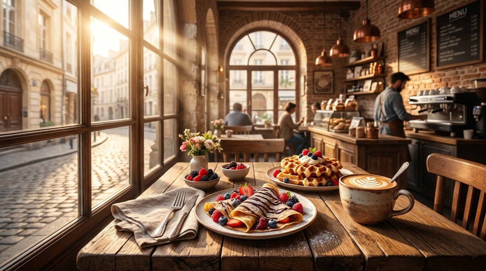
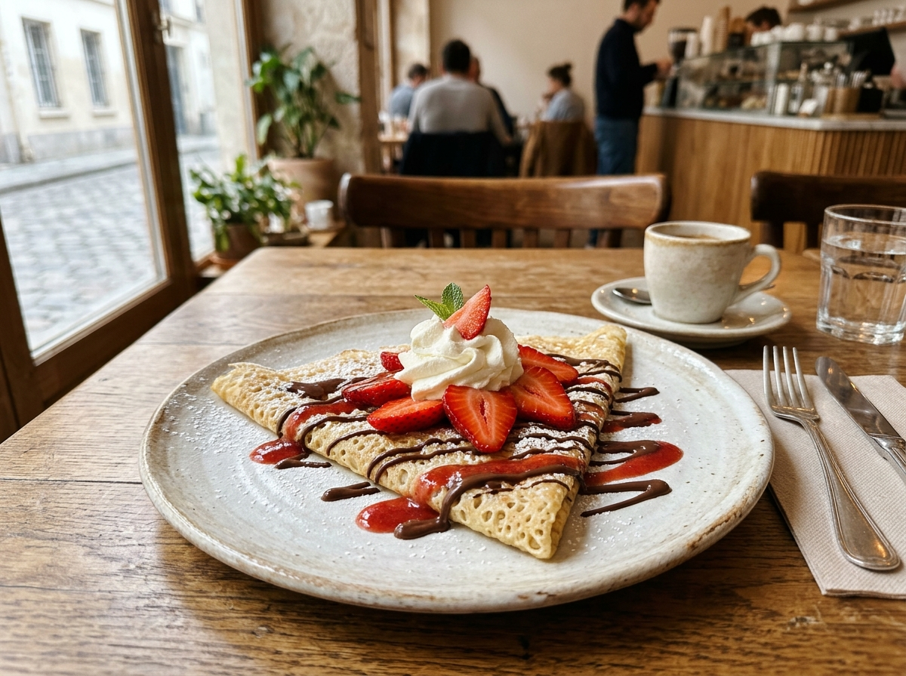
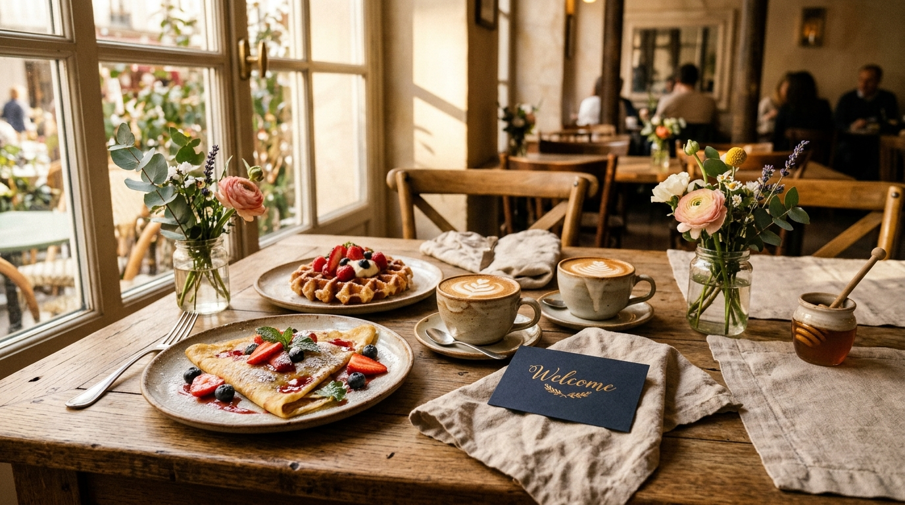
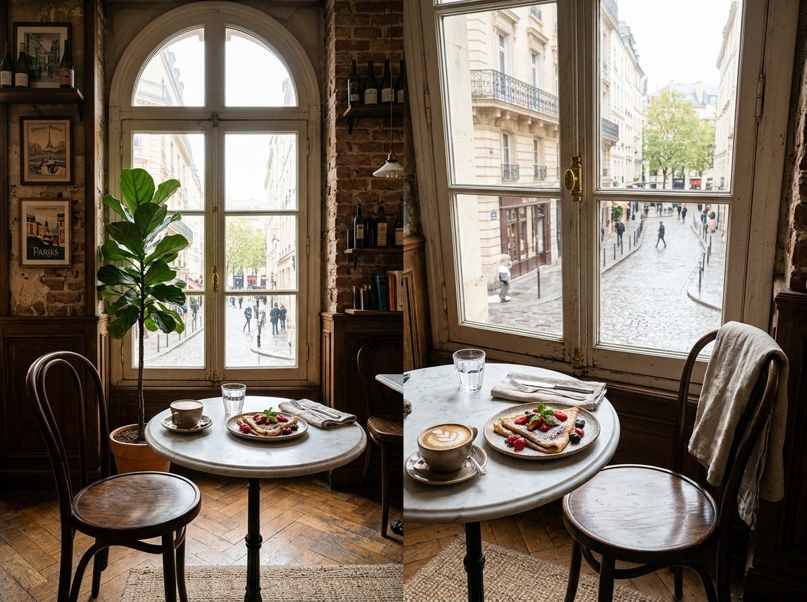

Step into our Parisian atelier and Belgian griddle house. Whether it's your very first morning flat white or a weekend brunch celebration, we're thrilled to welcome you.
At Crepe & Waffle Café, every item is crafted from scratch using 100% organic French flours, AOP Normandy cultured butter, and authentic Belgian pearl sugar. Here is how to make the most of your visit:
Twirled live across 200°C cast-iron billigs. From delicate lace-thin sweet crêpes to 100% Brittany buckwheat savory galettes.
Pressed from buttery, slow-risen brioche dough studded with imported pearl sugar that caramelizes into a golden glaze.
Ethically sourced direct-trade espresso roasts, ceremonial Kyoto matcha lattes, and thick Parisian drinking chocolates.
Visiting us for the very first time? Mention this welcome guide to your server or griddle artisan at any of our 6 boutique locations to receive your welcome treat!
Can't decide where to begin? These three artisan signatures are the most loved recommendations for every newcomer.

Most LovedHand-spread Brittany cold batter folded with fresh market strawberries, whipped vanilla crème chantilly, and 70% dark Valrhona ganache drizzle.
Explore Crêpes
Chef's SelectionButtery brioche Liège waffle studded with imported Belgian pearl sugar, paired with seasonal berries, house compote, and warm chocolate sauce.
Explore Waffles
Barista CraftEthically sourced direct-trade espresso pulled fresh with velvety steamed milk, served beside our sunlit arched windows overlooking Parisian streets.
Explore BeveragesWe keep things relaxed and unhurried. Here is what to expect when you walk through our doors:
Browse our chalkboard or digital menu. Pick sweet or savory, classic or adventurous.
Enjoy the live culinary theater as our master crêpiers spin batter on seasoned billigs.
Settle into a cozy velvet booth or sunny patio table with freshly brewed specialty coffee.
With 6 boutique ateliers across the city, your next warm crepe and freshly pressed waffle is always around the corner. Walk-ins are always welcomed with a warm smile!
Sourced from historic French grain cooperatives and pasture-fed dairies.
Prepared on separate dedicated Brittany cast-iron billigs.
Warm welcoming spaces for family brunch and weekend gatherings.
Freshly packed warm waffles, cold brews, and pastry gift boxes to go.
Browse our seasonal favorites or locate your nearest boutique atelier today.